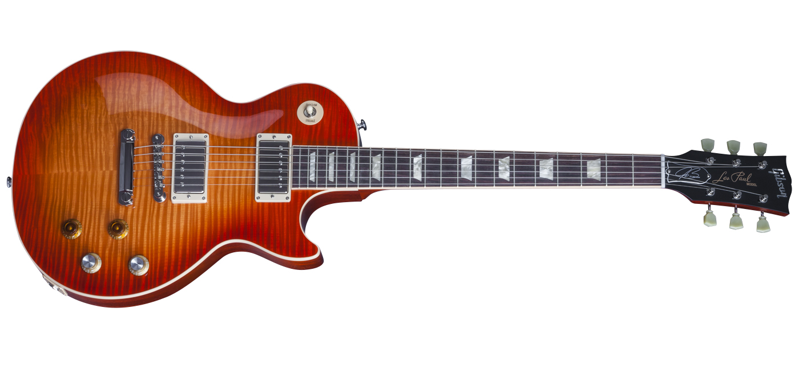

Les Paul
Les Paul Joe Bonamassa "Tomato Soup Burst" Limited Edition
Caracteristicas
- Tuners: Press in bushings vintage style keystone tuners
- Nut: Nylon nut
- Binding: Traditional binding over fret
- Pickups: Seymour Duncan 52-Nc and 53-Nc
- Hardware: Nickel hardware
- Knobs: Joe's signature knobs arrangement

ES-Les Paul Black Beauty
Caracteristicas
- Superior Adjustability due to the Teflon coating, larger diameter rod, original brass anchor and larger washer.
- Bone for smooth tuning and excellent durability
- Binding is rounded off to comfortably fit the contours of the player's hand
- New variations on your favorite vintage color schemes as well as all new, eye catching colors
- Less treble cut than previous capacitor results in a tone with a harmonically rich, singing quality
- The maximum complement of toneful PAF-style goodness
ES-Les Paul P-90 VOS
Caracteristicas
- The iconic symbol of the Gibson ES line is now the hallmark of Gibson Memphis.
- Superior Adjustability due to the Teflon coating, larger diameter rod, original brass anchor and larger washer.
- Binding is rounded off to comfortably fit the contours of the player's hand
- New variations on your favorite vintage color schemes as well as all new, eye catching colors
- Less treble cut than previous capacitor results in a tone with a harmonically rich, singing quality
- Vintage-wound fat single coils for a thick yet articulate tone.
Volver a Home